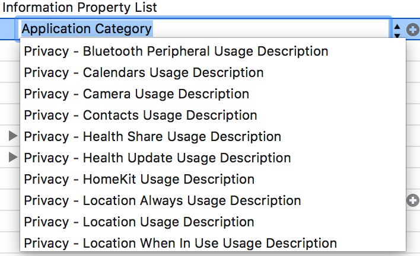
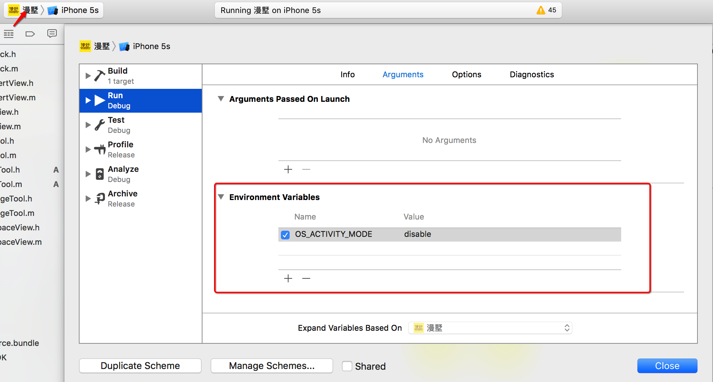
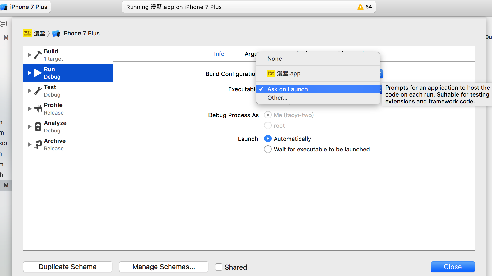

今天于三位一体将OS X 、iOS、Xcode 都升级了，终于用上了iOS 10和Xcode 8，由于Xcode 7的联想功能的不完善，一直希望苹果能在Xcode 8修复这个BUG，在用Xcode运行了一下公司的老项目后，发现了一些问题，在这里做一下记录：
iOS 10 崩溃
This app has crashed because it attempted to access privacy-sensitive data without a usage description. The app’s Info.plist must contain an NSCameraUsageDescription key with a string value explaining to the user how the app uses this data. （iOS 10 对隐私数据的访问，苹果又加强了对用户隐私的保护，规定开发者必须要向用户提供隐私数据的使用说明，说白了就是必须在plist里面加入你所需获取用户隐私的关键字，以及value说明。
注：value 必须填，不填依旧会崩溃）
- NSContactsUsageDescriptioncontactsDesciption
- NSMicrophoneUsageDescriptionmicrophoneDesciption
- NSPhotoLibraryUsageDescriptionphotoLibraryDesciption
- 。。。

腾讯Bugly 引起的崩溃
- 在更新iOS 10 之后，当应用进去后台再重新进入应用，或者上拉打开控制中心之后，应用崩溃。 查看崩溃信息 （马丹 哪有神马崩溃信息，直接崩到main函数里面) 查看函数调用栈，发现是bugly的子线程与主线程中的任务发生冲突，找腾讯客服，客服说等待修复，去掉bugly可解决崩溃。
Xcode 8 问题
Xcode 运行模拟器出现：ubsystem: com.apple.UIKit, category: HIDEventFiltered, enable_level: 0, persist_level: 0, default_ttl: 0, info_ttl: 0, debug_ttl: 0, generate_symptoms: 0, enable_oversize: 1, privacy_setting: 2, enable_private_data: 0 2016-09-14 17:18:55.843428 MyApp[6880:340837]
解决办法：【product】-【scheme】-【Edit Scheme】-【Run】-【Argument】-【Environment Variable】添加keyValue【OS_ACTIVITY_MODE disable】
Xcode 8 使用第三方插件问题
从旧版本Xcode升级后采用load bundle方式使用插件会导致快速注释功能失效 : 移除插件可解决:
1sudo /usr/libexec/xpccachectlXcode 8不能使用插件：原因是苹果为了避免类似Xcode Ghost事件发生，Xcode 8禁用了插件机制，而开放了另一种形式：Source Editor extensions。 — 解决方法
友情提示：不要在Xcode 8上使用第三方插件，可能会导致 你的APP 审核被拒哦！
Xcode 8 模拟器无法调试
错误标题: The request to open com.myDomain.MyApp failed
错误细节:
The request was denied by service delegate (
SBMainWorkspace) for reason:unspecified解决方法：点击模拟器前面的工程 -> Edit Scheme -> Info -> Executable -> 将MyApp.app换成Ask on launch
